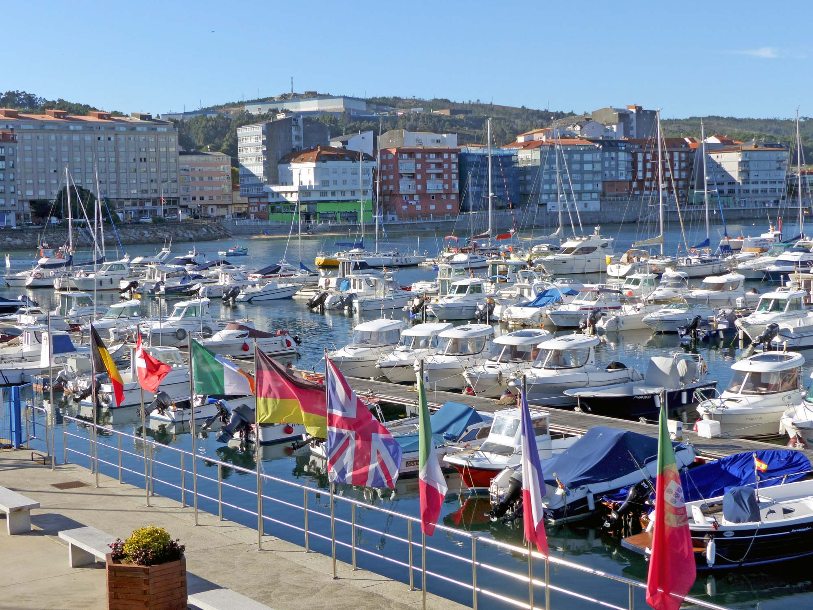
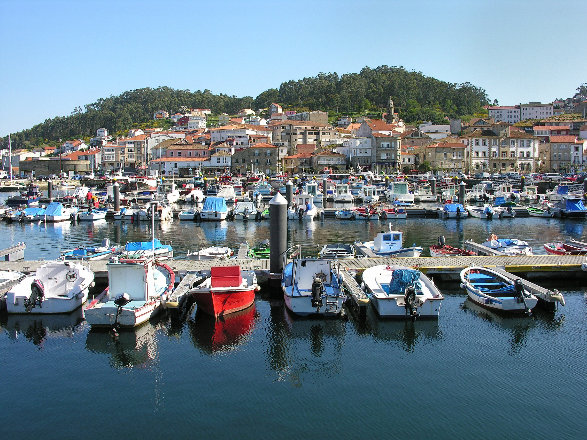
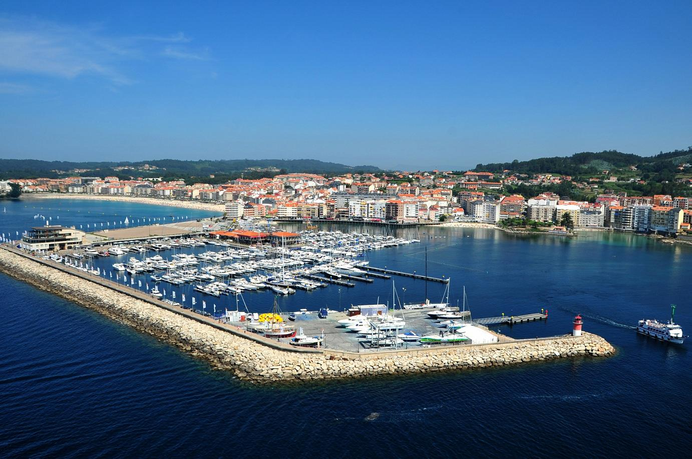
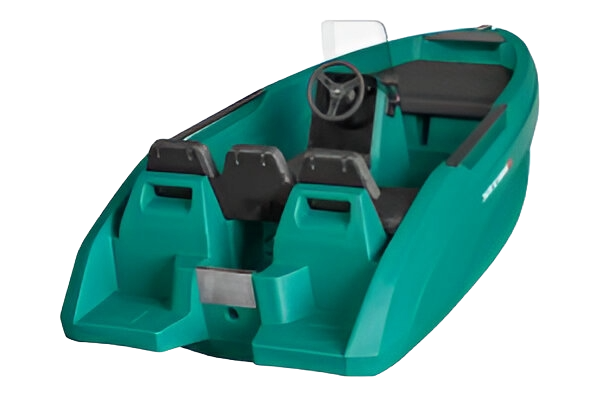
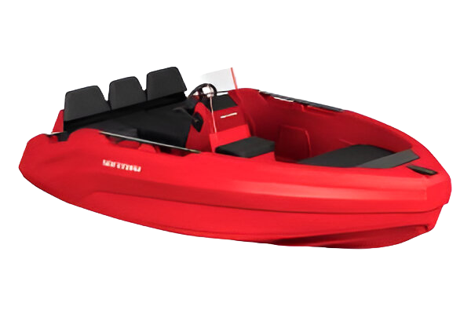
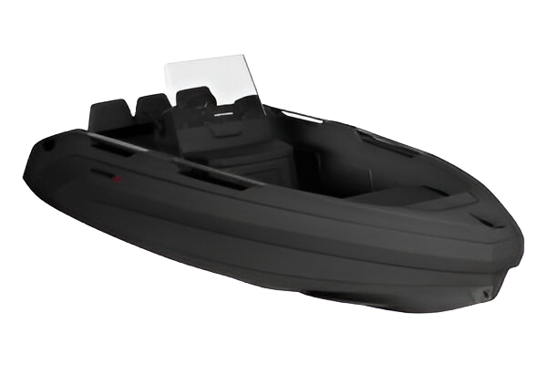
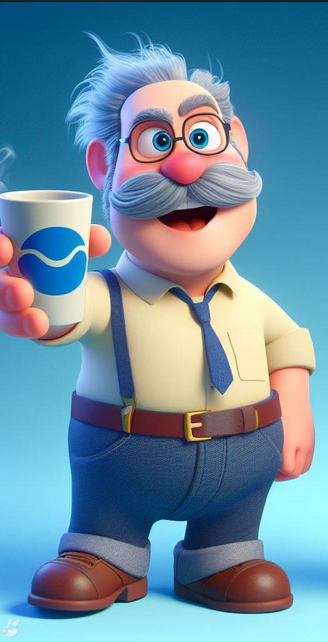

Explora Sailgreen, la empresa de alquiler de barcos del futuro.
Embarcaciones limpias y reciclables sin precedentes, con la última tecnología a bordo.
Punteros en la transformación digital de la industria náutica.
Disponemos de herramientas gratuitas para llevar tu experiencia al siguiente nivel.
Nuestra aplicación móvil te permitirá tener toda la información y herramientas que necesitas durante todo tu viaje con nosotros.
Todos los barcos disponen de un copiloto virtual que te ayudará en todo momento.
Para que no te preocupes y disfrutes de tu viaje.
Nuestros barcos, fabricados con materiales reciclados, no dañarán el mar por el que navegas.
Un motor eléctrico para disfrutar únicamente del sonido del mar, sin ruidos molestos.
Disponemos de 3 lugares de alquiler. Todos ellos equipados con las mayores comodidades.



Tenemos un número variado de embarcaciones destinadas a diferentes personas.

Explora las aguas con libertad a bordo del SeaStorm 12.
Este barco compacto y robusto, de 3,66 metros y fabricado en polietileno HDPE,
ofrece ligereza, robustez y sostenibilidad.
Con un motor fueraborda Yamaha de 25 CV y capacidad para 4 personas,
es ideal para principiantes y aventureros.
Su tamaño compacto facilita la navegación y te permite disfrutar del mar al máximo.

Disfruta con el SeaStorm 14, nuestro modelo de 4,27 metros de eslora que te ofrece una combinación perfecta de facilidad de navegación y habitabilidad.
Su llamativo color rojo te hará destacar en el agua, mientras que su motor fueraborda de 30 CV, unido a su ligero peso te permite navegar a velocidades emocionantes.
Con capacidad para hasta 5 personas, el SeaStorm 14 es ideal para compartir momentos inolvidables con tus amigos o tu familia.
Su tamaño compacto lo hace ideal para principiantes, permitiéndote disfrutar del mar sin complicaciones.

El SeaStorm 17 mide 5,17 metros de eslora y cuenta con un diseño elegante y deportivo en color negro. Este modelo ofrece una combinación perfecta de potencia, confort y versatilidad.
Su motor fueraborda Yamaha de 60 CV te permite disfrutar del mar con potencia y respetando al medio ambiente, mientras que su amplia capacidad para hasta 6 personas te permite compartir la aventura con amigos y familiares.
Este modelo cuenta con asientos acolchados que se pueden configurar para tomar el sol o viajar cómodamente durante la navegación. Además, cuenta con una escalerilla de baño para facilitar el acceso al agua.
Aquí tienes algunos comentarios de nuestros clientes.

De los servicios de alquiler más rápidos que he probado.
Fiabilidad sorprendente para una tecnología tan nueva.